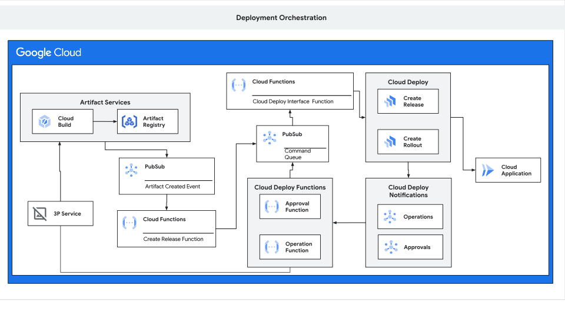

Platform Engineering Deployment Demo¶
Background¶
Platform engineering focuses on providing a robust framework for managing the deployment of applications across various environments. One of the critical components in this field is the automation of application deployments, which streamlines the entire process from development to production.
Most organizations have predefined rules around security, privacy, deployment, and change management to ensure consistency and compliance across environments. These rules often include automated security scans, privacy checks, and controlled release protocols that track all changes in both production and pre-production environments.
In this demo, the architecture is designed to show how a deployment tool like Cloud Deploy can integrate smoothly into such workflows, supporting both automation and oversight. The process starts with release validation, ensuring that only compliant builds reach the release stage. Rollout approvals then offer flexibility, allowing teams to implement either manual checks or automated responses depending on specific requirements.
This setup provides a blueprint for organizations to streamline deployment cycles while maintaining robust governance. By using this demo, you can see how these components work together, from container build through deployment, in a way that minimizes disruption to existing processes and aligns with typical organizational change management practices.
This demo showcases a complete workflow that begins with the build of a container and progresses through various stages, ultimately resulting in the deployment of a new application.
Overview of the Demo¶
This demo illustrates the end-to-end deployment process, starting from the container build phase. Here's a high-level overview of the workflow:
-
Container Build Process: The demo begins when a container is built in Cloud Build. Upon completion, a notification is sent to a Pub/Sub message queue.
-
Release Logic: A Cloud Run Function subscribes to this message queue, assessing whether a release should be created. If a release is warranted, a message is sent to a "Command Queue" (another Pub/Sub topic).
-
Creating a Release: A dedicated function listens to the "Command Queue" and communicates with Cloud Deploy to create a new release. Once the release is created, a notification is dispatched to the Pub/Sub Operations topic.
-
Rollout Process: Another Cloud Function picks up this notification and initiates the rollout process by sending a
createRolloutRequestto the "Command Queue." -
Approval Process: Since rollouts typically require approval, a notification is sent to the
cloud-deploy-approvalsPub/Sub queue. An approval function then picks up this message, allowing you to implement your custom logic or utilize the provided Website Demo to return JSON, such as{ "manualApproval": "true" }. -
Deployment: Once approved, the rollout proceeds, and the new application is deployed.

Prerequisites¶
- A GCP project with billing enabled
- The following APIs must be enabled in your GCP project:
compute.googleapis.comiam.googleapis.comcloudresourcemanager.googleapis.com
- Ensure you have the necessary IAM roles to manage these resources.
IAM Roles used by Terraform¶
To run this demo, the following IAM roles will be granted to the service account created by the Terraform configuration:
roles/iam.serviceAccountUser: Allows management of service accounts.roles/logging.logWriter: Grants permission to write logs.roles/artifactregistry.writer: Enables writing to Artifact Registry.roles/storage.objectUser: Provides access to Cloud Storage objects.roles/clouddeploy.jobRunner: Allows execution of Cloud Deploy jobs.roles/clouddeploy.releaser: Grants permissions to release configurations in Cloud Deploy.roles/run.developer: Enables deploying and managing Cloud Run services.roles/cloudbuild.builds.builder: Allows triggering and managing Cloud Build processes.
GCP Services enabled by Terraform¶
The following Google Cloud services must be enabled in your project to run this demo:
pubsub.googleapis.com: Enables Pub/Sub for messaging between services.clouddeploy.googleapis.com: Allows use of Cloud Deploy for managing deployments.cloudbuild.googleapis.com: Enables Cloud Build for building and deploying applications.compute.googleapis.com: Provides access to Compute Engine resources.cloudresourcemanager.googleapis.com: Allows management of project-level permissions and resources.run.googleapis.com: Enables Cloud Run for deploying and running containerized applications.cloudfunctions.googleapis.com: Allows use of Cloud Functions for event-driven functions.eventarc.googleapis.com: Enables Eventarc for routing events from sources to targets.
Getting Started¶
To run this demo, follow these steps:
-
Fork and Clone the Repository: Start by forking this repository to your GitHub account (So you can connect GCP to this repo), then clone it to your local environment. After cloning, change your directory to the deployment demo:
-
Set Up Environment Variables or Variables File:
You can set the necessary variables either by exporting them as environment variables or by creating aterraform.tfvarsfile. Refer tovariables.tffor more details on each variable. Ensure the values match your Google Cloud project and GitHub configuration.-
Option 1: Set environment variables manually in your shell:
-
Option 2: Create a
terraform.tfvarsfile in the same directory as your Terraform configuration and populate it with the following:
-
-
Initialize and Apply Terraform: With the environment variables set, initialize and apply the Terraform configuration:
Note: Applying Terraform may take a few minutes as it creates the necessary resources.
-
Connect GitHub Repository to Cloud Build: Due to occasional issues with automatic connections, you may need to manually attach your GitHub repository to Cloud Build in the Google Cloud Console.
If you get the following error you will need to manually connect your repo to the project:
Re-run step 3 to ensure all resources are deployed
-
Navigate to the Demo Website: Once the Terraform setup is complete, switch to the Demo Website directory:
-
Authenticate and Run the Demo Website:
-
Ensure you are running these commands on a local machine or a machine with GUI/web browser access, as Cloud Shell may not fully support running the demo website.
-
Set your Google Cloud project by running:
-
Authenticate your Google Cloud CLI session:
-
Install required npm packages and start the demo website:
-
Open
http://localhost:8080in your browser to observe the demo website in action.
-
-
Trigger a Build in Cloud Build:
- Initiate a build in Cloud Build. As the build progresses, messages will display on the demo website, allowing you to follow each step in the deployment process.
- You can also monitor the deployment rollout on Google Cloud Console.
-
Approve the Rollout: When an approval message is received, you’ll need to send a response to complete the deployment. Use the message data provided and add a
ManualApprovalfield: -
Verify the Deployment: Once the approval is processed, the deployment should finish rolling out. Check the Cloud Deploy dashboard in the Google Cloud Console to confirm the deployment status.
Conclusion¶
This demo encapsulates the essential components and workflow for deploying applications using platform engineering practices. It illustrates how various services interact to ensure a smooth deployment process.